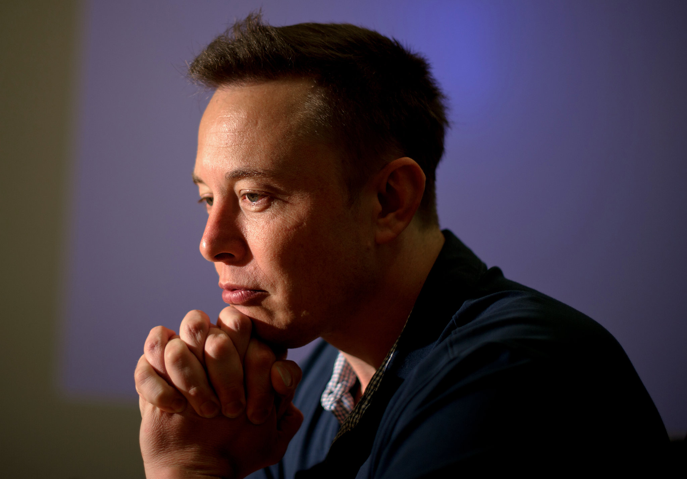
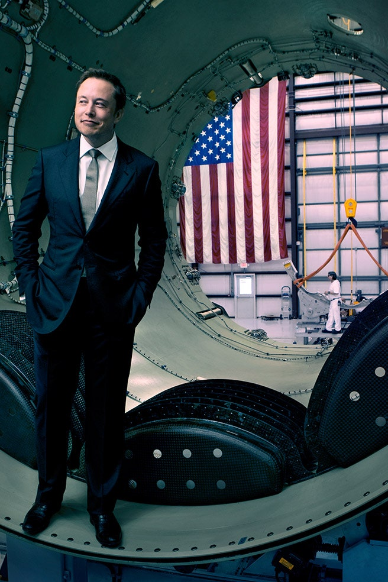
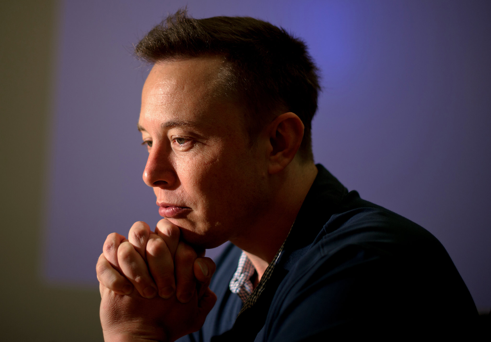
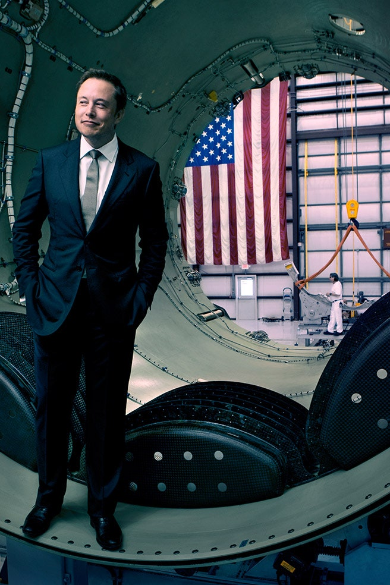

Elon Musk
 




One of the Greatest Innovator of Our Time
Elon Musk is a cutting-edge, serial entrepreneur born and raised in South Africa. A lifelong technologist and entrepreneur, he bought his first computer at age 10 and taught himself how to program it. He sold his first software program, a space game called Blastar, for about $500 when he was 12 years old.
Musk left South Africa at the age of 17 to avoid compulsory military service. In the book Rocketeers, Musk explained, “I don’t have an issue with serving in the military per se, but serving in the South African army suppressing black people just didn’t seem like a really good way to spend time.” After living near relatives in Canada, he came to the University of Pennsylvania on a scholarship where he received two degrees in business and physics. He chose to settle in the United States because, “It is where great things are possible. I am nauseatingly pro-American.”
He enrolled to pursue a PhD in energy physics at Stanford but dropped out after just two days to start his first company, called Zip2, with his brother in 1995. The company produced online content publishing software and was sold in 1999 to AltaVista for $341 million. Building on that success, Musk co-founded an online financial services company, X.com. After merging with Confinity (co-founded by immigrant entrepreneur Max Rafael Levchin), the name was changed to PayPal. In 2002, PayPal was acquired by eBay for $1.5 billion and spun back out as an independent public company in 2015.
Musk did not waste any time founding his third company. Space Exploration Technologies (SpaceX) was launched in 2002 with $100 million of his own money to develop and manufacture space launch vehicles. After becoming the first commercial company in history to send a spacecraft to the International Space Station, SpaceX was awarded a $440 million contract with NASA to develop the successor to the Space Shuttle and transport American astronauts into space. Musk views space exploration as important for ensuring the long-term viability of human life, and he continues to serve as the company’s CEO and CTO.
He also is deeply concerned about climate change. That concern led him to create the electric car company, Tesla Motors, invest in and serve as chairman of photovoltaics company, SolarCity, and become a trustee of the X Prize Foundation, which promotes renewable energy technologies. He provided almost all the capital for the first two rounds of funding of Tesla Motors where he remains the CEO and product architect. He has been compared to Henry Ford for his potential impact on the auto industry. In 2019, Forbes named him America’s Most Innovative Leader. Musk is outspoken in his opinions on politics as well as tech, which has sometimes stirred controversy and raised his profile as a public figure.
In addition to climate change, Musk considers Artificial Intelligence (AI) a potential existential challenge. In 2015, he co-created OpenAI to promote and develop “friendly AI” to benefit humanity as a whole. In 2016, he launched Neuralink to develop brain-machine interfaces to connect humans and computers. Among other benefits, the technology could alleviate the symptoms of chronic medical conditions, like depression, epilepsy and Parkinson’s.